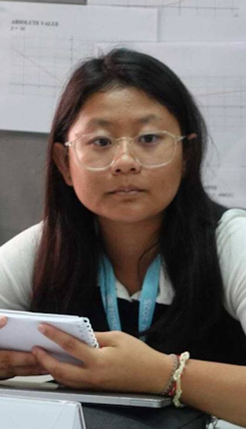

01 · Head Chair
Khoo Xiang Hui
My name is Xiang Hui (Melody), a sophomore at ISPP, and it is my utmost pleasure and honour to serve as your head chair for JGA1 at AUPPHS-FA MUN III. I will do my best to ensure that this conference will go smoothly and be filled with fruitful debates and unforgettable memories! I understand how nerve-wracking this experience may be (or not), but either way, my fellow chairs and I will do our utmost best to support and guide you. Please do not hesitate to reach out to me at @29khoox.ispp.edu.kh.
Looking forward to seeing you all soon!